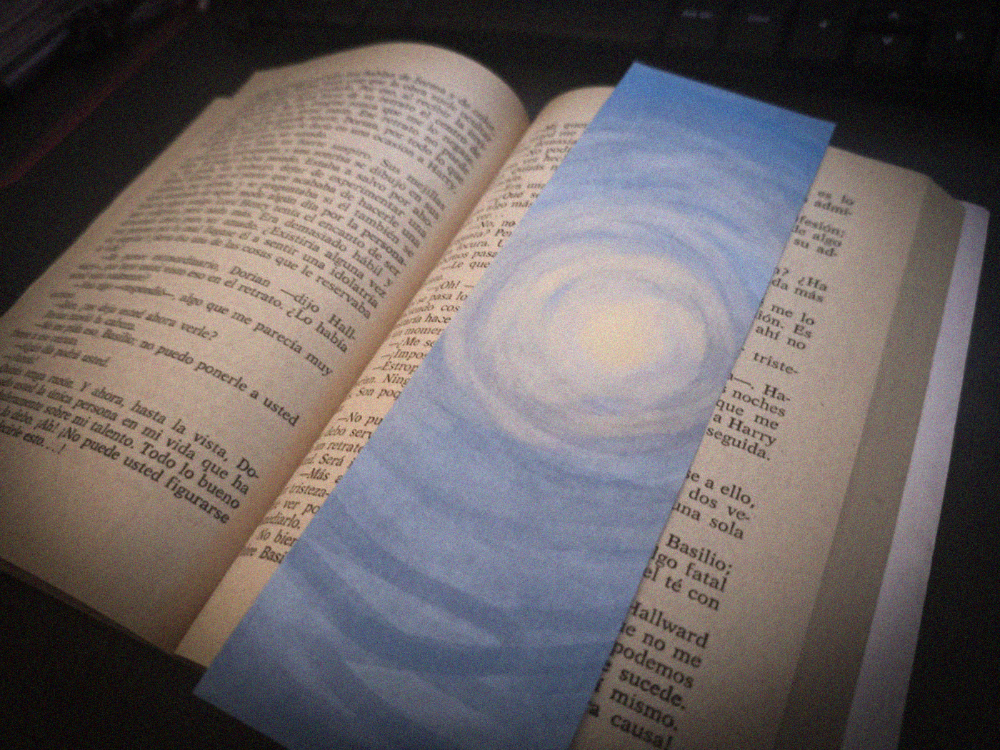
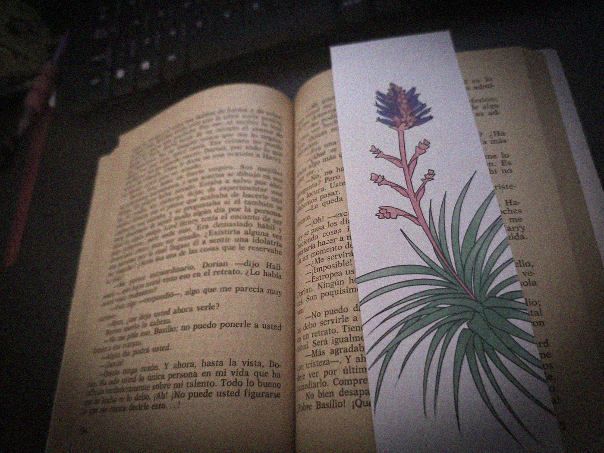
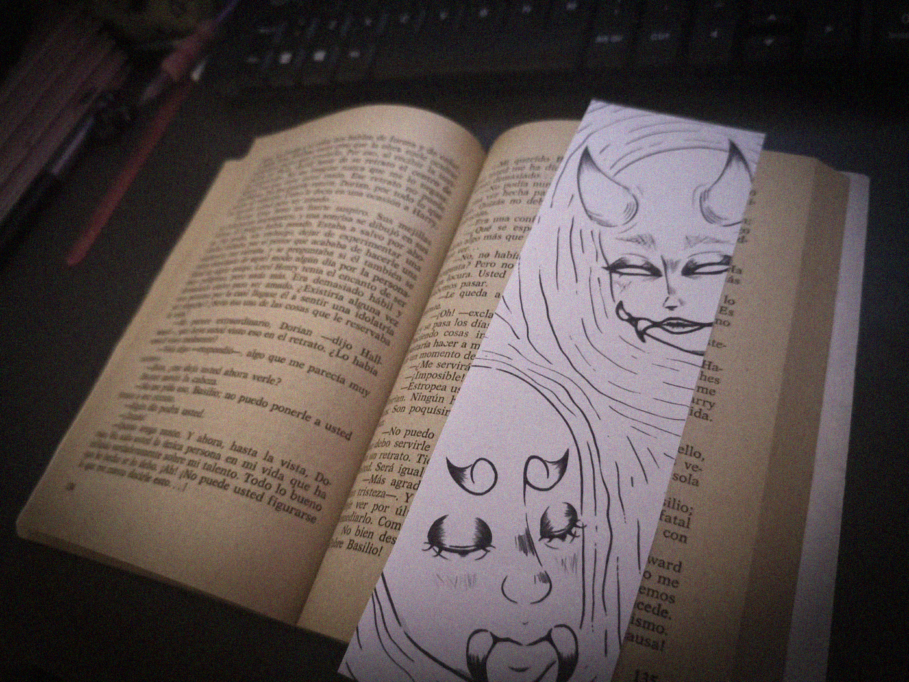
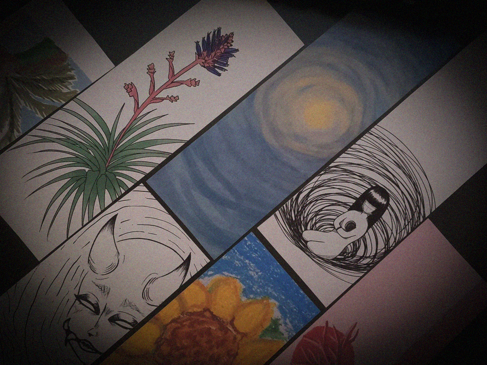

Ilustro lo que me pidas — desde algo botánico y delicado hasta algo oscuro o fantástico. Cada marcapágina se hace pensando en la persona que lo va a usar.
Ver cómo funciona
— hecho a pedido —No hay producción en serie. Cada pieza nace de una conversación contigo.
Tú eliges el estilo: gótico, botánico, tierno o fantástico. El diseño se piensa para ti, no al revés.
Cada trazo es ilustrado y coloreado a mano, sin plantillas repetidas ni impresión masiva.
Despacho por Correos de Chile. Si eres de Arica, coordinamos entrega en persona sin costo.
Algunos de los estilos que ya he creado — cada uno distinto, como quien lo pidió.



Cuatro pasos, sin complicaciones.